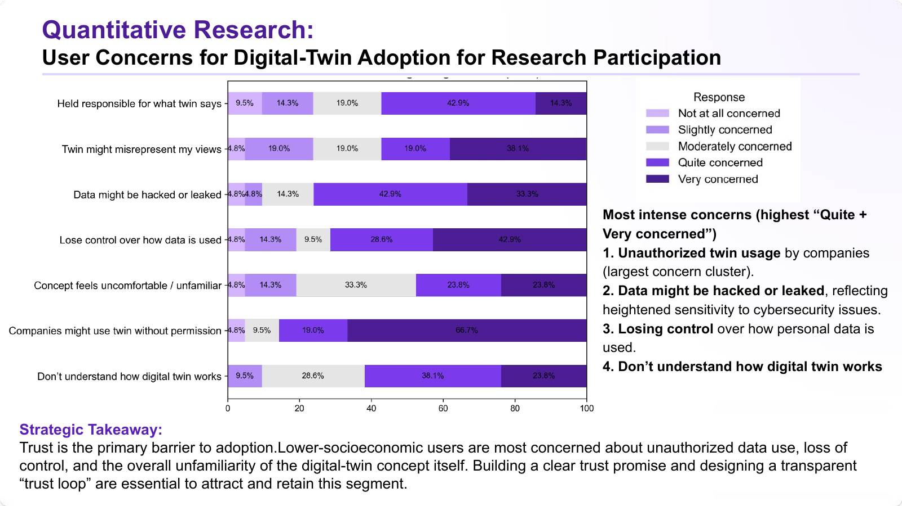
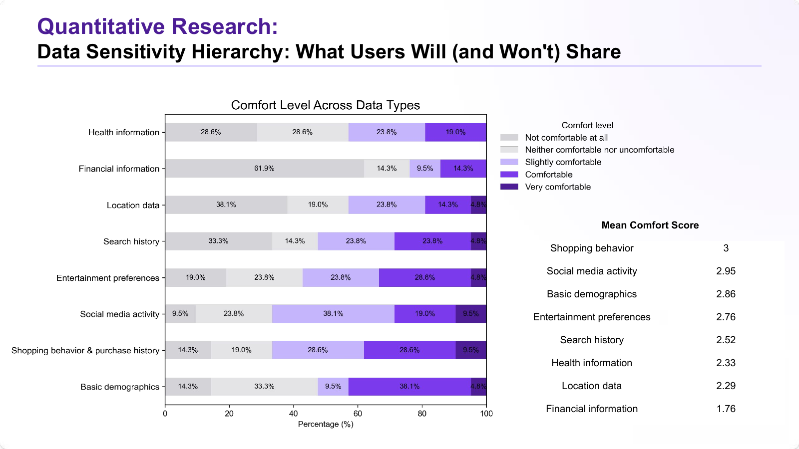
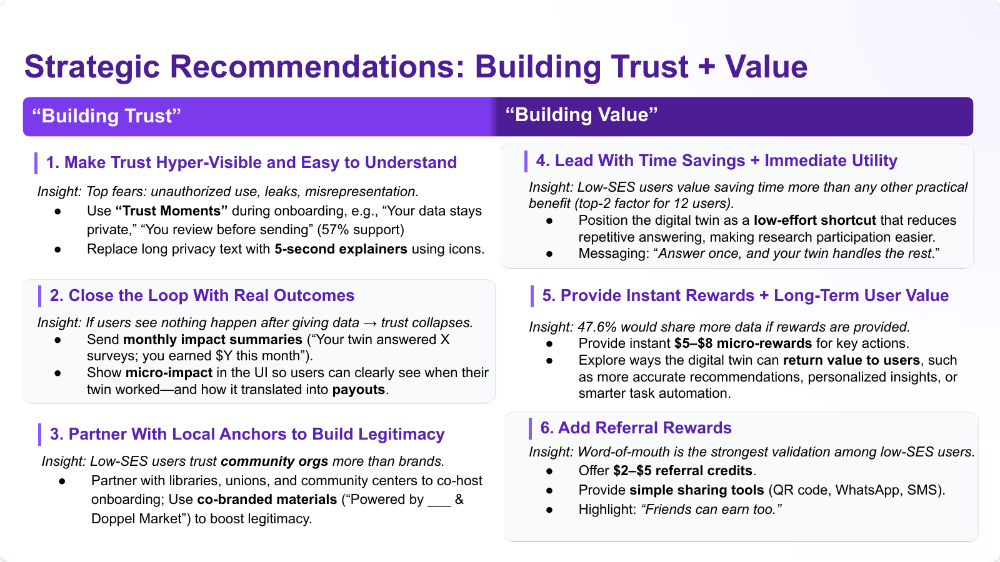

Skillset
财务激励是人们参与调研的头号原因，但在数字孪生采纳场景下却是最弱驱动力。人们犹豫不是因为钱，是因为不信任：未经授权使用、数据泄露、搞不懂怎么运作，是top concerns。
结论很明确：数字孪生采纳是信任问题，不是财务问题。我们据此拆出六条建议，分“建立信任”和“建立价值”两组，并如实标注了研究本身的局限性（包括抽样偏差）。
展开看细节
5场线下定性访谈加28题 Qualtrics 问卷（n=21）。核心结论：financial compensation 是 general research participation 的 #1 动机，但在 digital twin adoption 场景下驱动力最弱。


